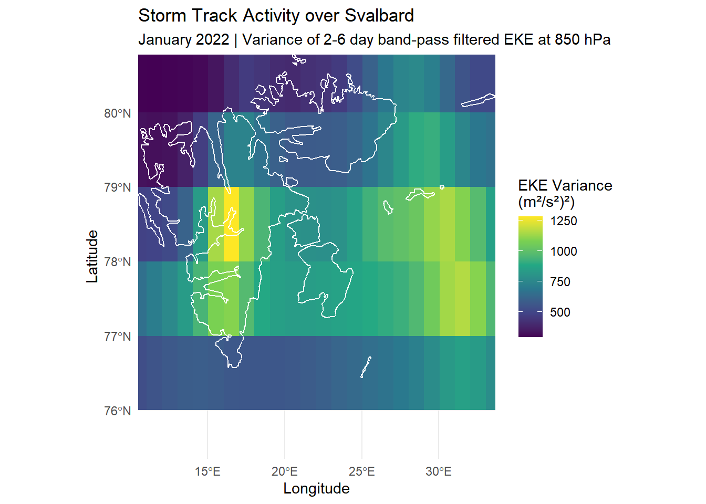
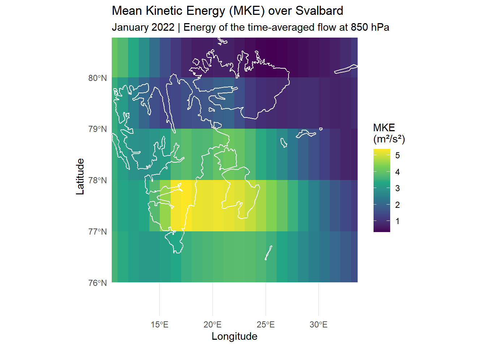

This first R code chunk loads the reticulate library and configures a dedicated Python virtual environment for this project. This only needs to be run completely once.
# Load the reticulate packagelibrary(reticulate)library(tidyverse)
── Attaching core tidyverse packages ──────────────────────── tidyverse 2.0.0 ──
✔ dplyr 1.1.4 ✔ readr 2.1.5
✔ forcats 1.0.1 ✔ stringr 1.5.1
✔ ggplot2 3.5.2 ✔ tibble 3.2.1
✔ lubridate 1.9.4 ✔ tidyr 1.3.1
✔ purrr 1.0.4
── Conflicts ────────────────────────────────────────── tidyverse_conflicts() ──
✖ dplyr::filter() masks stats::filter()
✖ dplyr::lag() masks stats::lag()
ℹ Use the conflicted package (<http://conflicted.r-lib.org/>) to force all conflicts to become errors
library(terra)
terra 1.8.70
Attaching package: 'terra'
The following object is masked from 'package:tidyr':
extract
library(sf)
Linking to GEOS 3.13.1, GDAL 3.11.0, PROJ 9.6.0; sf_use_s2() is TRUE
# 1. Define the name for our Python virtual environmentvenv_name <-"arctic-env"# 2. Create the virtual environment if it doesn't already exist# This makes the script safely re-runnableif (!virtualenv_exists(venv_name)) {virtualenv_create(venv_name)}# 3. Tell R to USE this virtual environment for all Python codeuse_virtualenv(venv_name, required =TRUE)# 4. Verify the configuration# The output should show the Python path inside your new 'arctic-env'py_config()
python: C:/Users/franc/Documents/.virtualenvs/arctic-env/Scripts/python.exe
libpython: C:/Users/franc/AppData/Local/r-reticulate/r-reticulate/pyenv/pyenv-win/versions/3.11.9/python311.dll
pythonhome: C:/Users/franc/Documents/.virtualenvs/arctic-env
version: 3.11.9 (tags/v3.11.9:de54cf5, Apr 2 2024, 10:12:12) [MSC v.1938 64 bit (AMD64)]
Architecture: 64bit
numpy: C:/Users/franc/Documents/.virtualenvs/arctic-env/Lib/site-packages/numpy
numpy_version: 2.3.3
NOTE: Python version was forced by use_python() function
# Install Python packages into our virtual environmentpy_install(packages =c("numpy", # For numerical operations"xarray", # The key library for working with NetCDF files"netcdf4", # A dependency for xarray to read NetCDF files"h5netcdf", # Another dependency for reading NetCDF files"cdsapi", # API to download ERA5 data"scipy"# Scientific computation ),envname = venv_name)
import cdsapiimport osimport xarray as xrfrom scipy import signalimport numpy as np# Define the final path where we want the file to befinal_path = os.path.join('data', 'era5_850hpa_2022_01_svalbard.nc')# First, check if the file already exists at the final destinationifnot os.path.exists(final_path):print(f"File not found at {final_path}. Starting download from CDS...") c = cdsapi.Client() dataset ="reanalysis-era5-pressure-levels" request = {"product_type": "reanalysis","variable": ["u_component_of_wind", "v_component_of_wind" ],"year": "2022","month": "01","day": ["01", "02", "03", "04", "05", "06", "07", "08", "09", "10","11", "12", "13", "14", "15", "16", "17", "18", "19", "20","21", "22", "23", "24", "25", "26", "27", "28", "29", "30", "31" ],"time": ["00:00", "01:00", "02:00", "03:00", "04:00", "05:00", "06:00","07:00", "08:00", "09:00", "10:00", "11:00", "12:00", "13:00","14:00", "15:00", "16:00", "17:00", "18:00", "19:00", "20:00","21:00", "22:00", "23:00" ],"pressure_level": "850","format": "netcdf","area": [81, 10, 76, 35] }# Retrieve the data AND download it to the final path in one step by adding .download(target=final_path) c.retrieve(dataset, request).download(target=final_path)print(f"Data successfully downloaded to {final_path}")else:print(f"File already exists at {final_path}. Skipping download.")
File already exists at data\era5_850hpa_2022_01_svalbard.nc. Skipping download.
# --- PART 1: Define the New, Robust Filter Function ---def bandpass_filter(ds, u_var, v_var, time_dim, fs, lowcut_days, highcut_days, order=5):""" Applies a robust, detrending band-pass filter to u and v components of an xarray Dataset. Uses a simple loop for stability and returns the Dataset with eddy components. """print("Designing the filter...")# Design the filter once lowcut_freq =1/ lowcut_days highcut_freq =1/ highcut_days b, a = signal.butter(order, [lowcut_freq, highcut_freq], btype='band', fs=fs)# Get data as numpy arrays u_data = ds[u_var].values.astype('float64') v_data = ds[v_var].values.astype('float64')# Create empty arrays for results u_eddy_data = np.empty_like(u_data) v_eddy_data = np.empty_like(v_data)print("Applying filter cell by cell. This may take a moment...")# Loop through each spatial grid cellfor lat_idx inrange(u_data.shape[1]):for lon_idx inrange(u_data.shape[2]):# Detrend and filter the time series for this cell u_filtered = signal.filtfilt(b, a, signal.detrend(u_data[:, lat_idx, lon_idx])) v_filtered = signal.filtfilt(b, a, signal.detrend(v_data[:, lat_idx, lon_idx]))# Store the result u_eddy_data[:, lat_idx, lon_idx] = u_filtered v_eddy_data[:, lat_idx, lon_idx] = v_filteredprint("Filtering complete.")# Add the results back to the original dataset ds['u_eddy'] = ((time_dim, 'latitude', 'longitude'), u_eddy_data) ds['v_eddy'] = ((time_dim, 'latitude', 'longitude'), v_eddy_data)return ds# --- PART 2: Load Data and Apply the Function ---# Load the datasetds_real = xr.open_dataset('data/era5_850hpa_2022_01_svalbard.nc').squeeze()# Define parametersfs_samples_per_day =24lowcut_period_days =6.0highcut_period_days =2.0# Call the self-contained functionds_real_filtered = bandpass_filter( ds=ds_real, u_var='u', v_var='v', time_dim='valid_time', fs=fs_samples_per_day, lowcut_days=lowcut_period_days, highcut_days=highcut_period_days)
Designing the filter...
Applying filter cell by cell. This may take a moment...
Filtering complete.
# --- PART 3: Sanity Check ---print("\nSanity Check of filtered 'u_eddy' values:")
Why a function? We need to perform the exact same filtering operation on both the u and v wind components. Encapsulating the logic in a function makes our code reusable, readable, and less prone to errors from copy-pasting.
## 2. The Function’s Inputs (Parameters)
Let’s look at the function’s “control knobs”:
data_array: This is the input data we want to filter (e.g., the xarray DataArray containing our u wind component).
fs: This stands for sampling frequency. Think of it as frames per second in a video. It tells the filter how many data points we have per time unit. Since our filter is defined in days (a 2-6 day band) and our data is hourly, we have 24 samples per day. So, fs = 24.
lowcut_days and highcut_days: These are the edges of our “band,” directly from your proposal. We set them to 6.0 and 2.0. This tells the filter we want to keep the signals with a period between 2 and 6 days.
order=5: This controls the “steepness” of the filter. A higher order creates a sharper cutoff between the signals we keep and those we reject. An order of 5 is a robust, standard choice that provides a clean separation.
## 3. Inside the Function: The “How”
This is where the scientific computation happens.
A. Designing the Filter
from scipy import signal # ... b, a = signal.butter(order, [low, high], btype='band')
Digital filters are defined by a set of mathematical coefficients. This line uses the scipy.signal.butter function to design a Butterworth filter, which is a standard type known for being very stable and not distorting the signal in the “passband” (the 2-6 day range we want to keep). The function takes our parameters and calculates the necessary coefficients, which it returns as b and a.
B. Applying the Filter
lambda x: signal.filtfilt(b, a, signal.detrend(x))
This is the core operation. The signal.filtfilt function takes the filter coefficients (b, a) and applies them to the data (x). The reason we use filtfilt (“filter-filter”) is crucial:
It filters the data once in the forward direction.
Then, it filters the resulting signal again in the backward direction.
This two-way pass perfectly corrects for any time lag (phase shift) that a normal filter would introduce. This ensures that the peaks and troughs in our filtered storm signal are perfectly aligned in time with the original data. The data is also detrended with signal.detrend() prior to filtering to remove any linear trends that could cause filter instability.
C. Applying Across the Entire grid
filtered_data = xr.apply_ufunc(...)
This is the most powerful part of the code. The filtfilt function is designed to work on a simple, 1D time series. But our data is a 3D grid (time, latitude, longitude).
xr.apply_ufunc is xarray’s magic wand for this problem. It intelligently applies the 1D filtfilt function to every single time series at each individual latitude/longitude grid point. It handles all the looping for us in a highly optimized way. The input_core_dims=[['time']] argument is our instruction to xarray, telling it that filtfilt operates along the time dimension.
This executes the whole process. It feeds the raw u and v wind data into our function. The function then designs the filter and applies it across the entire grid, returning the perfectly isolated eddy components (u’ and v’). These are now ready for the final EKE calculation.
Step 1: Calculate EKE, MKE and TKE
# 'ds_real' is the xarray Dataset from the previous chunk, containing u_eddy and v_eddy# 1. Calculate EKE using the eddy components# EKE = 0.5 * (u'^2 + v'^2)eke =0.5* (np.square(ds_real['u_eddy']) + np.square(ds_real['v_eddy']))# 2. Add EKE as a new data variable to the datasetds_real['eke'] = eke# 3. Print the dataset to confirm the new 'eke' variable is presentprint(ds_real)
<xarray.Dataset> Size: 51MB
Dimensions: (valid_time: 744, latitude: 21, longitude: 101)
Coordinates:
number int64 8B ...
* valid_time (valid_time) datetime64[ns] 6kB 2022-01-01 ... 2022-01-31...
pressure_level float64 8B 850.0
* latitude (latitude) float64 168B 81.0 80.75 80.5 ... 76.5 76.25 76.0
* longitude (longitude) float64 808B 10.0 10.25 10.5 ... 34.5 34.75 35.0
expver (valid_time) <U4 12kB ...
Data variables:
u (valid_time, latitude, longitude) float32 6MB -9.694 ... ...
v (valid_time, latitude, longitude) float32 6MB -0.1228 ......
u_eddy (valid_time, latitude, longitude) float64 13MB 1.742 ... ...
v_eddy (valid_time, latitude, longitude) float64 13MB -0.1631 .....
eke (valid_time, latitude, longitude) float64 13MB 1.531 ... ...
Attributes:
GRIB_centre: ecmf
GRIB_centreDescription: European Centre for Medium-Range Weather Forecasts
GRIB_subCentre: 0
Conventions: CF-1.7
institution: European Centre for Medium-Range Weather Forecasts
history: 2025-10-01T15:15 GRIB to CDM+CF via cfgrib-0.9.1...
# 4. Calculate the time-averaged wind components (u_bar, v_bar)# We take the mean of the original wind fields across the 'valid_time' dimension.u_bar = ds_real['u'].mean(dim='valid_time')v_bar = ds_real['v'].mean(dim='valid_time')# 5. Calculate Mean Kinetic Energy (MKE) using the formulamke =0.5* (np.square(u_bar) + np.square(v_bar))# 6. Calculate the time-average of our previously calculated EKEeke_mean = ds_real['eke'].mean(dim='valid_time')# 7. Calculate the time-average of Total Kinetic Energy (TKE)tke = mke + eke_mean# 8. Combine these into a final summary dataset for easy accessds_summary = xr.Dataset({'mke': mke, 'eke_mean': eke_mean, 'tke': tke})# Rename the 'eke_mean' to just 'eke' for simplicity, as it's the mean EKEds_summary = ds_summary.rename({'eke_mean': 'eke'})print("Summary of Monthly-Mean Kinetic Energy Components (m²/s²):")
Summary of Monthly-Mean Kinetic Energy Components (m²/s²):
# 'ds_real' now contains our 'eke' variable# Calculate the variance across the time dimension ('valid_time')# This leaves us with a 2D grid of (latitude, longitude)eke_variance = ds_real['eke'].var(dim='valid_time')# Print the final 2D DataArrayprint("Final 2D EKE Variance grid:")
# --- PART 1: Define the Integrated Function ---# This single function handles both conversion from Python and remapping.process_and_remap_py <-function(py_xarray_object, layer_name, template_raster) {# Step A: Convert the Python object to a high-resolution R SpatRaster high_res_raster <- terra::rast(t(py_xarray_object$values),ext = terra::ext(min(py_xarray_object$longitude$values),max(py_xarray_object$longitude$values),min(py_xarray_object$latitude$values),max(py_xarray_object$latitude$values) ),crs ="EPSG:4326" )# Step B: Remap the high-resolution raster to the template grid resampled_raster <- terra::resample(high_res_raster, template_raster, method ="bilinear")# Set the final layer namenames(resampled_raster) <- layer_name# Return the final, remapped rasterreturn(resampled_raster)}# --- PART 2: Prepare the Target Grid (Blueprint) ---# We create the 1.0-degree blueprint once. All data will be remapped to this grid.template_raster <- terra::rast(resolution =1.0, extent = terra::ext(min(py$eke_variance$longitude$values),max(py$eke_variance$longitude$values),min(py$eke_variance$latitude$values),max(py$eke_variance$latitude$values) ),crs ="EPSG:4326")# --- PART 3: Apply the New Function to All Variables ---# Now we just call our powerful new function for each variable.eke_variance_resampled <-process_and_remap_py(py$eke_variance, "eke_variance", template_raster)mke_resampled <-process_and_remap_py(py$ds_summary$mke, "mke", template_raster)tke_resampled <-process_and_remap_py(py$ds_summary$tke, "tke", template_raster)# Let's print one of the final products to verify.# The resolution should now be 1 x 1.print("--- Final Resampled EKE Raster (1.0-degree resolution) ---")
[1] "--- Final Resampled EKE Raster (1.0-degree resolution) ---"
print(eke_variance_resampled)
class : SpatRaster
size : 5, 25, 1 (nrow, ncol, nlyr)
resolution : 1, 1 (x, y)
extent : 10, 35, 76, 81 (xmin, xmax, ymin, ymax)
coord. ref. : lon/lat WGS 84 (EPSG:4326)
source(s) : memory
name : eke_variance
min value : 293.5577
max value : 1284.6801
Step 4: Visualize the final maps
# Devtools to install the high-resolution map data package from its source# devtools::install_github("ropensci/rnaturalearthhires")# Acquire all Norwegian state-level polygons using the function: ne_states().norway_territories <-ne_states(country ="Norway", returnclass ="sf")# Now, filter that collection to get only the feature named "Svalbard"svalbard_sf <- norway_territories |>filter(name =="Svalbard")# Get the bounding box of the Svalbard polygonsvalbard_bbox <-st_bbox(svalbard_sf)# Convert the raster to a data frame for plotting with ggplot2eke_variance_resampled_df <-as.data.frame(eke_variance_resampled, xy =TRUE)# Create the final map with the new contour layerggplot() +# First, draw the EKE raster datageom_raster(data = eke_variance_resampled_df, aes(x = x, y = y, fill = eke_variance)) +# Next, draw the Svalbard outline on topgeom_sf(data = svalbard_sf, fill =NA, color ="white", linewidth =0.5) +# Apply color scale and labelsscale_fill_viridis_c(name ="EKE Variance\n(m²/s²)²)") +labs(title ="Storm Track Activity over Svalbard",subtitle ="January 2022 | Variance of 2-6 day band-pass filtered EKE at 850 hPa",x ="Longitude",y ="Latitude" ) +# IMPORTANT: Set the plot's coordinate system and limits# We add a small buffer (e.g., +/- 1 degree) for a nice margincoord_sf(xlim =c(svalbard_bbox["xmin"], svalbard_bbox["xmax"]),ylim =c(svalbard_bbox["ymin"] +1, svalbard_bbox["ymax"]),expand =FALSE ) +theme_minimal()

mke_resampled_df <-as.data.frame(mke_resampled, xy =TRUE)ggplot() +geom_raster(data = mke_resampled_df, aes(x = x, y = y, fill = mke)) +geom_sf(data = svalbard_sf, fill =NA, color ="white", linewidth =0.5) +scale_fill_viridis_c(name ="MKE\n(m²/s²)") +labs(title ="Mean Kinetic Energy (MKE) over Svalbard",subtitle ="January 2022 | Energy of the time-averaged flow at 850 hPa",x ="Longitude",y ="Latitude" ) +coord_sf(xlim =c(svalbard_bbox["xmin"], svalbard_bbox["xmax"]),ylim =c(svalbard_bbox["ymin"] +1, svalbard_bbox["ymax"]),expand =FALSE ) +theme_minimal()

# Convert the raster to a data frame for plotting with ggplot2tke_resampled_df <-as.data.frame(tke_resampled, xy =TRUE)# Create the final map with the new contour layerggplot() +# First, draw the EKE raster datageom_raster(data = tke_resampled_df, aes(x = x, y = y, fill = tke)) +# Next, draw the Svalbard outline on topgeom_sf(data = svalbard_sf, fill =NA, color ="white", linewidth =0.5) +# Apply color scale and labelsscale_fill_viridis_c(name ="TzKE\n(m²/s²)") +labs(title ="Total Kinetic Energy (TKE) over Svalbard",subtitle ="January 2022 | Total mean kinetic energy (MKE + EKE) at 850 hPa",x ="Longitude",y ="Latitude" ) +# IMPORTANT: Set the plot's coordinate system and limits# We add a small buffer (e.g., +/- 1 degree) for a nice margincoord_sf(xlim =c(svalbard_bbox["xmin"], svalbard_bbox["xmax"]),ylim =c(svalbard_bbox["ymin"] +1, svalbard_bbox["ymax"]),expand =FALSE ) +theme_minimal()